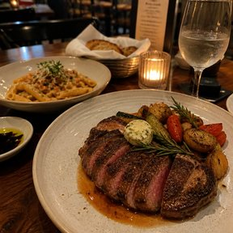
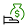

Insights
Weekly health check
Jun 4–Jun 10
Your most profitable items sold well this weekend, but closing early on Tuesdays cost you some sales.
You could be making about $850 more a week. Slower weekend tables and closing early on Tuesdays are holding you back.
- Your score of 92 is 2nd out of 12 similar cafés within 2 miles this week.
- You’ve acted on a Vera suggestion every week for 3 weeks. Act on one by Wed Jun 17 to make it 4.
- Your score of 82 is 2nd out of 12 similar cafés within 2 miles this week. A typical café scores 74.
You are having a strong week!
Jun 1–Jun 25
Net sales
$1,200
ahead of target
Your most profitable items are selling well on weekends.
What’s moving your sales
Your path to a $15k safety net
Jun 4–Jun 10
Strong weekend sales are moving you closer, but closing early on Tuesdays is setting your $15k safety net back about two weeks. To make that up, what if…
+$380
Today’s focus
Calendar
Heavy rain expected
Patio sales usually drop 22%. 2 things to do.
Patriots home game
Past games brought 12% more sales. 1 idea to try.
Reviews
3 reviews need a reply.
“Food was great, but our server forgot a drink and we waited 20 min to flag her down. Friday night. Would still come back. Hoping it was just an off night with the service, because everything else was really solid.”

Inventory
5 items running low
Brioche buns
Under 1 day left (8 of 60)
Romaine hearts
1 day left (6 of 16 lb)
Sourdough loaves
3 days left (5 of 24)
Staffing
Based on your sales trends
Tue dinner
6pm–10pm
Understaffed
Add 1 shiftThu lunch
11am–2pm
Overstaffed
Drop 3 shiftsSat full day
11am–10pm
Overstaffed
Drop 1 serverSupercharge your business
Speed up with a
Clover Kiosk
Shorter lines for your customers, more sales for you.
Explore devicesGrow with online ordering
Similar businesses make 32% more with online ordering.

Saturday is at capacity
Sales stop growing at 2pm, when the patio fills up. Serving that overflow is worth about $1,400 a year.